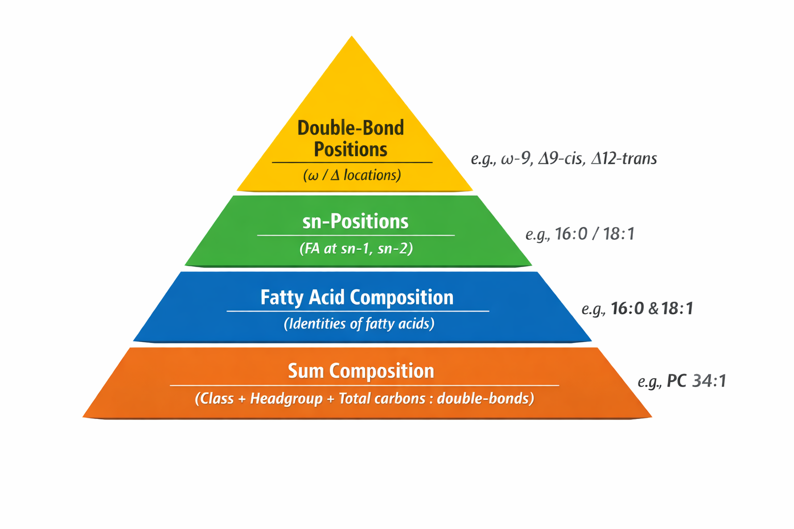

When lipid species are measured in both positive and negative ionization modes
under identical chromatographic conditions, they elute at the same retention time but may be reported under
different identifiers. These identifiers reflect the degree of structural information that can be resolved in
each polarity, as positive and negative modes produce different, polarity-specific fragment ions.
This step standardizes lipid naming across polarities so that all adduct forms of a lipid map to
a single, unified identifier, with the most structurally informative (highest-resolution)
identifier retained.
Result: Positive- and negative-mode entries referring to the same lipid share the same
Lipid Unique Identifier, enabling a single kinetic trajectory downstream.

Lipid Structural Pyramid: The lipid structural pyramid illustrates increasing levels of structural resolution in lipid annotation. At the base is sum composition, which reports the lipid class and headgroup along with the total number of fatty acid carbons and double bonds (e.g., PC 34:1). Fatty acid composition identifies the individual fatty acids present (e.g., 16:0 & 18:1) but not their positions. sn-Positional resolution specifies which fatty acid is attached at the sn-1 and sn-2 positions of the glycerol backbone, where the fatty acid to the left of the slash (/) is at sn-1 and the fatty acid to the right is at sn-2 (e.g., 16:0/18:1). At the highest level, double-bond positions define the locations of unsaturations using Δ (counting from the carboxyl carbon) or ω (counting from the methyl end) notation, and may include cis/trans geometry.
Naming Standardization Rules
Sum Composition Extraction
The Sum Composition is defined as the substring of
Lipid Unique Identifier before the first |.
Cross-Polarity Matching
Positive- and negative-mode lipids are eligible for merging if:
Their Sum Composition is identical, and
Their retention times differ by ≤ overlap time seconds (default: 6).
Canonical Identifier Selection
When a positive/negative pair is matched, the more descriptive identifier
(longer string) is selected and written back to both entries.
Other Pre-processing Steps
D7 standard detection: Rows with cf containing D7 are labeled D7-standard = True.
Deuterium normalization: All deuterium (D) atoms are merged into hydrogen (H) counts in cf and Adduct_cf.
Formula cleanup: A single consolidated hydrogen count is retained; redundant H/D tokens are removed.
Why This Step Exists
Prevents duplicate lipid identities across polarities
Ensures all adducts contribute to a single kinetic model
Preserves the most informative lipid annotation
Inputs and Outputs
Inputs:
Positive-mode CSV
Negative-mode CSV
Outputs:
Positive-mode CSV with standardized identifiers
Negative-mode CSV with standardized identifiers
User Configuration
The only user-configurable parameter is overlap time, the retention-time tolerance (in seconds)
used for cross-polarity matching.
Recommended selection:
Compare a matched positive/negative run.
Identify the RT gap separating identical versus distinct lipids.
Set overlap time to avoid false merges while preserving true matches.
If Standardize_positive_and_negative_lipid_IDs/Standardize_positive_and_negative_lipid_IDs.cmd (or ish)
exists in your working directory, the “Standardize Polarity Syntax” button will appear and execute it.